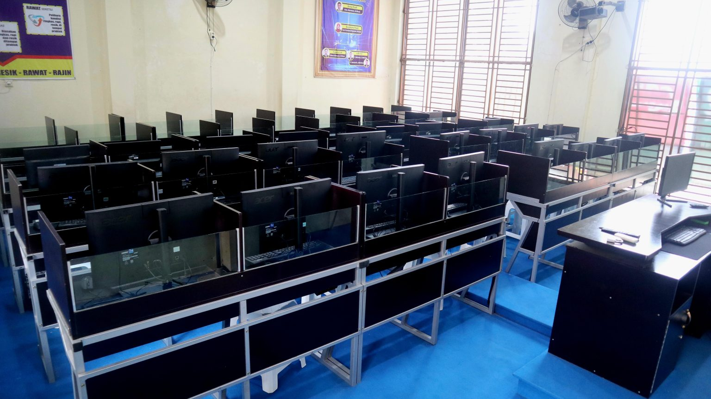

PROGRAM STUDI
TEKNIK INFORMATIKA
Politeknik Baja Tegal

Politeknik Baja Tegal
Program Studi Teknik Informatika Politeknik Baja Tegal berdiri dengan tujuan menghasilkan lulusan yang memiliki kemampuan di bidang teknologi informasi, rekayasa perangkat lunak, jaringan komputer, dan keamanan sistem. Program studi ini dirancang untuk mendukung kebutuhan industri digital yang terus berkembang.
Mahasiswa dibimbing oleh dosen-dosen profesional dan berpengalaman dalam dunia industri IT, serta difasilitasi dengan laboratorium modern untuk mendukung kegiatan praktikum dan penelitian. Dengan pendekatan pembelajaran berbasis vokasi, mahasiswa tidak hanya memahami teori, tetapi juga siap untuk beradaptasi di dunia kerja nyata.
Kami berkomitmen untuk menghasilkan lulusan yang berintegritas, kreatif, inovatif, dan mampu bersaing secara nasional maupun global. Program Studi Teknik Informatika Politeknik Baja Tegal menjadi tempat terbaik untuk memulai karier di bidang teknologi digital.
Menjadi Program Studi dengan lulusan yang berkualitas di bidang Teknologi Informasi serta memiliki kemampuan kreatif, inovatif, dan berdaya saing global.